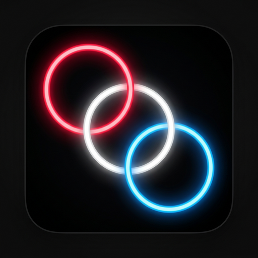
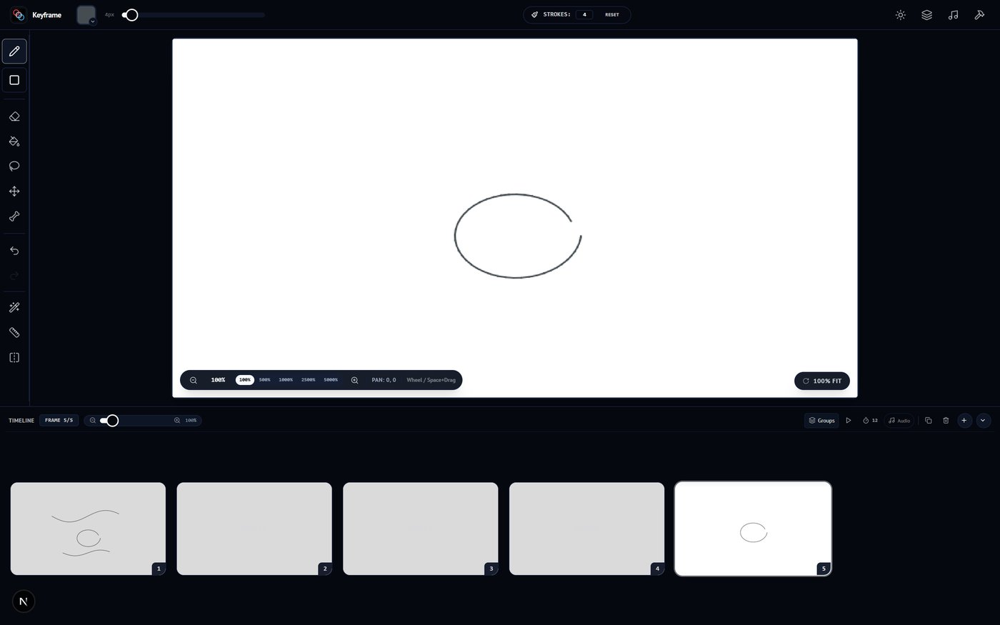
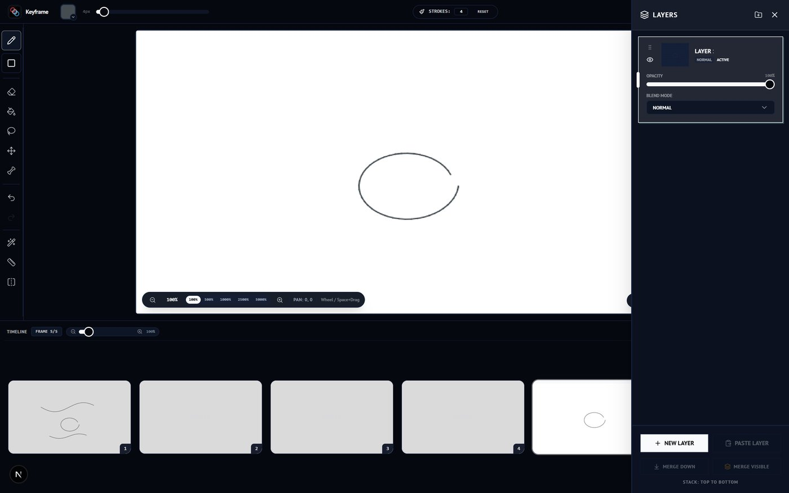
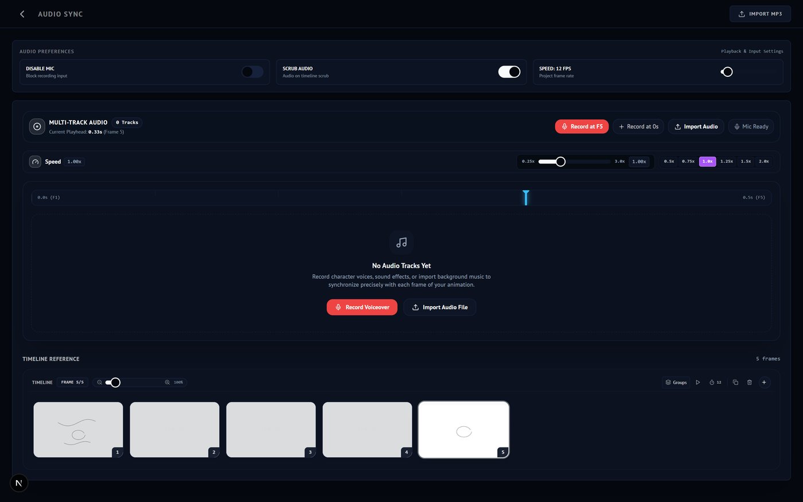
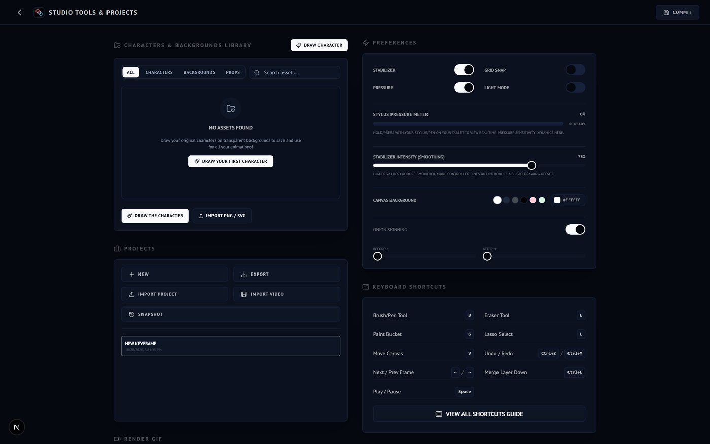

Pro drawing engine
Fourteen tuned brushes — ink, watercolor, charcoal, airbrush — with real pressure sensitivity and stroke stabilization.

KeyframeStudio Get the appFree on Google Play
Keyframe Studio is a frame-by-frame 2D animation toolkit — a pro brush engine, onion skinning, multi-layer canvas and audio sync, packed into a distraction-free studio that fits in your pocket.
The toolkit
A focused studio — no menus twenty levels deep, no subscription gates. Just the tools, tuned for motion.
Fourteen tuned brushes — ink, watercolor, charcoal, airbrush — with real pressure sensitivity and stroke stabilization.
Draw, import or capture your own brush tips and organize them into tip sets. Your textures, your rules.
Drag-and-drop frames, group them, set per-group FPS — and see past and future frames as translucent ghosts.
A real layer stack — visibility, locking, reordering and six-plus blend modes including Multiply and Overlay.
Import MP3s or record in-app, then scrub the timeline to hear each frame — lip-sync and timing, nailed.
Render crisp GIFs with alpha, MP4s up to 240 fps — or import a video and trace it frame by frame.
Inside the studio
Pro animation suites lock frame-by-frame drawing behind subscriptions, desktop installs and hundred-button interfaces. Keyframe Studio puts the whole pipeline — sketch to export — in a focused workspace that runs entirely on your device.
Pen, ink, watercolor, charcoal, airbrush, calligraphy nib, technical pen and more — every brush reads real pen pressure and runs through an adjustable stabilizer, so lines land where your hand meant them to.
Not enough? The Brush Lab lets you draw, import or capture custom tips and organize them into shareable tip sets — spacing, rotation and all. And when precision matters, symmetry mirrors your strokes across six modes, including an 8-fold mandala, while rulers, grid snap and multi-draw sync keep geometry honest.

the editor — toolbar · canvas · timeline
Add, duplicate and reorder frames with drag-and-drop, group scenes together, and set per-group frame rates for complex sequences. Playback is live, right under your canvas.
Onion skinning ghosts up to five frames before and after the playhead — translucent overlays that keep spacing and volume consistent, so your motion stays fluid instead of jittery.
the timeline — frames · groups · fps · scrub
Unlimited layers with folders, visibility, locking and per-layer opacity — organized the way professional pipelines expect.
Six blend modes (multiply, overlay, screen, darken, lighten) handle shading and glow effects. Merge down, flatten the stack, or save any layer straight into your asset library for the next scene.

the layers panel — stack · opacity · blend modes
Import MP3s or record straight from the mic — tracks land on a waveform pinned under the timeline, so you can see the beat you're animating to.
Scrub the playhead and the audio follows frame by frame; adjust per-track and global playback speed to nail lip-sync and action timing — no external editor needed.

audio sync — tracks · waveform · per-track speed
Projects auto-save as you draw and live entirely on-device — switch between multiple projects, and pin snapshots of any version to roll back to later.
Import a video and it becomes frames for rotoscoping; pull characters and backgrounds from the asset library; then ship a transparent GIF or an MP4 at up to 240 fps. Full keyboard-shortcut support and dark & light themes included.

studio tools — projects · preferences · export
The loop
Rough it in with pressure-sensitive brushes on a multi-layer canvas. Lasso, fill, transform — the rough stuff stays fast.
Add frames on the timeline, trace over onion skins, sync to a waveform. Play it back instantly at any FPS.
Render to transparent GIF or full-res MP4 and share straight from your device. Projects auto-save locally.
Made for
Block out scenes and timing fast, before the heavy production begins.
Classic frame-by-frame character work with a real layer stack and onion skin.
Craft sprite cycles and frame-based animations right on your device.
Teach the twelve principles in a zero-install, distraction-free studio.
Full spec sheet
The complete list — no "pro tier" locked behind a paywall. Everything below ships free in the app.
Get the app
Free, offline-first and no account required. Your projects live on your device — pick up a pen and your next scene is a tap away.